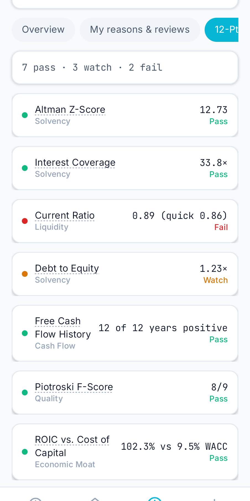
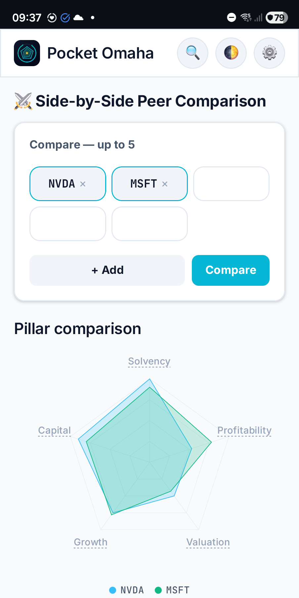

Unelte de zi cu zi
Spendosaurus
Planifică cheltuielile mari ale familiei, de la prima estimare la ultima rată.
Înțelege ce s-a schimbat la companiile pe care le urmărești. Revizuiește-ți motivele.

Pocket Omaha îi ajută pe investitorii pe termen lung să înțeleagă ce s-a schimbat la companiile pe care le urmăresc și să revadă motivele din spatele fiecărei idei. Este disponibilă ca aplicație web gândită pentru mobil și ca aplicație nativă Android.
Pornește de la o listă de urmărire, folosește Review ca să vezi ce companii au nevoie de atenția ta și deschide Research ca să analizezi dovezile. Notează de ce urmărești o companie, ce trebuie să rămână adevărat și ce te-ar face să te răzgândești, apoi consemnează dacă aceste motive încă se mențin.





Sursele gratuite de date de piață lasă adesea câmpuri goale. În loc să umple golurile cu valori implicite plauzibile, Pocket Omaha afișează o valoare lipsă ca neraportată și o exclude din scor. Sub 60% acoperire a măsurătorilor nu produce niciun scor, iar fiecare fișă de scor arată anul fiscal pe baza căruia a fost calculată.
Situațiile financiare provin din SEC EDGAR, cifrele exact cum au fost depuse, cu Yahoo Finance ca rezervă și pentru cotații. Nu există chei API și nici costuri recurente.
Ambele versiuni folosesc același motor de scor, așa că o companie primește același scor, aceeași listă de verificare și aceeași evaluare în oricare dintre ele. Aplicația web rulează pe un server găzduit personal, cu acces doar pe bază de invitație și notificări push. Aplicația Android păstrează totul pe telefon, nu are nevoie de cont și adaugă un widget pe ecranul principal pentru o listă de urmărire aleasă.
Pe Android, autentificarea cu Google e necesară doar pentru analiza AI, care funcționează pe credite: cinci gratuite, iar altele se pot cumpăra. Aplicația Android este o versiune candidată, în drum spre Google Play.
Pocket Omaha este un instrument de cercetare și revizuire. Scorurile rezumă fundamentele istorice raportate; nu prezic randamente și nu oferă sfaturi personale de investiții.
Planifică cheltuielile mari ale familiei, de la prima estimare la ultima rată.

Pune-ți la încercare intuiția despre gravitație cu puzzle-uri de fizică orbitală.

Urmărește trenurile din România, rutele lor și întârzierile în schimbare.